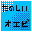
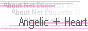
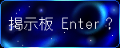

ＢＢＳ＆Ｐ−ＢＢＳ
お絵かき掲示板と、文章掲示板が一緒になっている掲示板です。
一般常識の範囲での書き込みをお願いします。タメ語はご勘弁。
（タメ語なのに注意なしで管理人が応対してるのは、オフでの実際の友達の書き込みのみです）
日記、独り言、宣伝のみの書き込み、大型ＡＡもご遠慮下さると嬉しいです；
「荒らし」だと管理人が判断した投稿は、予告無く削除されることがありますがご了承下さい。
管理人が対応いたしますので、
もし問題のある書き込みがあった場合も、反応なさらないようお願いします。
文章を書き込む場合は、画面上部の「通常投稿」ボタンを押して、書き込んで下さい。
（イラストも描かれる場合）
最低１０分くらいはかけて下さると嬉しいです（´ω｀*
荒らし、年齢制限付き、キャラクターのイメージ破壊、
他の方のオリキャラなどは厳禁。即削除します。
こちらも、管理人がどうにかしますので見かけたとしても無視して下さいね。
後ろ向き発言はほどほどで。また、連続投稿はお控えください。
レスはお返ししますので「コメント下さい」だけの投稿とかはお控えください。
描くことが出来るのは、
「任天堂系ジャンル、もしくは管理人oｒ貴方のオリジナルキャラクター」です。
原型でも擬人化でも大丈夫です。
イラストを描く場合は、画面上部の「お絵かき」ボタンを押して、書き込んで下さい。
こちらのマナーサイト様も、ご参考にどうぞー＾＾*
なんだかんだ言いましたが、一般常識のある方ならどうぞどなたでもカモンカモンです。
 
 （新窓表示）